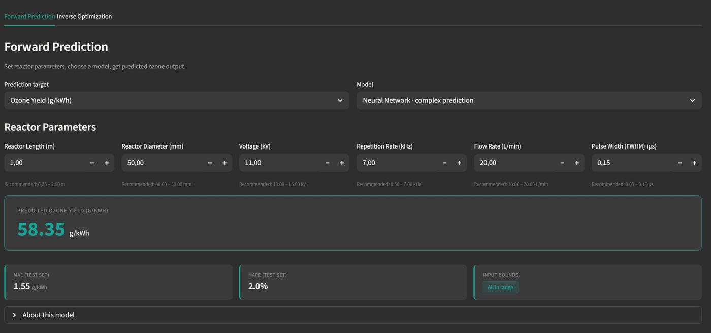
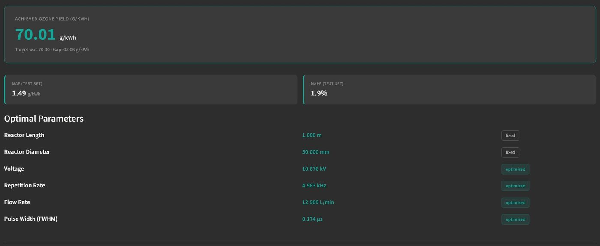

// KapiteinLabs · graduation internship · 2026
Predicting and maximising ozone production
A predict and optimise machine learning pipeline, delivered as a no-code Streamlit dashboard, that estimates a plasma reactor's ozone output from its settings and recommends the settings needed to reach a target output. Built end to end over a six-month graduation internship.
KapiteinLabs builds plasma reactors that turn short high-voltage pulses into ozone for water and air treatment. Ozone cannot be stored, so every application needs its own generator, and designing one for a specific output currently means running a new lab experiment for every configuration. That is slow and expensive.
It is harder still because KapiteinLabs does not run most of its own experiments. The data comes from a research group at TU Eindhoven. That creates two pains: internally there is no fast way to know which reactor settings are worth testing next, and commercially there is no quick way to tell a client what reactor they would need for their ozone demand.
Enter a set of reactor settings such as length, diameter, voltage, repetition rate, flow rate, and pulse width, and get the predicted ozone output instantly. Engineers test ideas on the model first and only run the experiments that look promising.
Work the other way. Enter a target ozone output, fix whatever constraints you have such as a reactor geometry, and the tool searches for the settings that reach it, answering a client's question about which reactor they need in seconds.
I trained five models on the same train and test split, from a linear baseline up to a physics-informed neural network (PINN) with monotonicity constraints drawn from the plasma ozone literature. The PINN won, and the physics constraints acted as regularisation, nudging the model to respect known physical relationships instead of fitting noise.
Everything ships as one Streamlit app that engineers and clients use without writing code. It shows the model's error next to every prediction, flags inputs outside the trained range, and can be retrained on new experiments as the dataset grows.


The real challenge was not the modelling, it was the data. Campaign 5 arrived as 2,000+ raw oscilloscope files plus parallel UV-spectrometry readings, with no documentation, inconsistent folder layouts, and per-date exceptions. The original analysis lived in MATLAB.
I reverse-engineered that pipeline and rebuilt it from scratch in around 1,500 lines of Python, covering signal processing, energy integration, and Beer-Lambert ozone extraction, then validated it against the original MATLAB outputs before trusting a single row. Cleaning took the dataset from 726 down to a reliable 438 measurements.
Permutation importance across all four non-linear models pointed at the same two physical levers, consistent with the plasma physics and a useful steer for which parameters to focus future experiments on.